Elaborați un program care determină câte puncte cu coordonate întregi se conțin într-o sferă de raza R cu centrul în originea sistemului de coordonate. Se consideră că R este un număr natural, 1 ≤ R ≤ 30. Distanța d dintre un punct cu coordonatele (x, y, z) și originea sistemului de coordonate se determină după formula: d = √x² + y² + z².
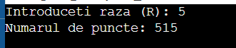
#include <iostream>
using namespace std;
// M1.9 - metoda trierii
int main()
{
int R, p = 0;
cout << "Introduceti raza (R): ";
cin >> R;
if (R < 1 || R > 30) {
cout << "\nR trebuie sa fie intre 1 si 30!" << endl;
return 1;
}
for (int x = -R; x <= R; x++)
for (int y = -R; y <= R; y++)
for (int z = -R; z <= R; z++)
if (x*x + y*y + z*z <= R*R)
p++;
cout << "Numarul de puncte: " << p << endl;
return 0;}
Subșiruri. Se dă un șir de n numere întregi. Să se descompună acest șir în număr minim de subșiruri strict crescătoare, astfel încât numerele lor de ordine (din șirul dat) să fie ordonate crescător în subșirurile formate. Date de intrare: Prima linie a fișierului de intrare date.in conține numărul n, reprezentând numărul de elemente din șir. Următoarea linie conține cele n numere întregi, separate prin câte un spațiu. Date de ieșire: Fișierul de ieșire date.out va conține pe prima linie un număr întreg k, reprezentând numărul minim de subșiruri care se pot forma. Pe următoarele k linii vor fi descrise subșirurile crescătoare. Un subșir va fi precizat prin numerele de ordine ale elementelor din șirul inițial, despărțite prin câte un spațiu. Restricții și precizări: - 1 ≤ n ≤ 10000; - elementele șirului sunt numere cuprinse în intervalul [0, 40000]. Exemplu: date.in 10 2 3 1 6 8 3 7 9 5 7 date.out 3 1 2 4 5 8 3 6 7 9 10 Explicație: Se pot forma 3 subșiruri crescătoare: 2, 3, 6, 8, 9 1, 3, 7 5, 7 .
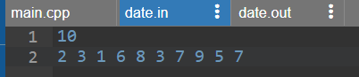
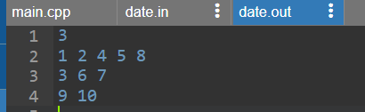
#include <iostream>
#include <fstream>
using namespace std;
//M2.13 - metoda greedy
int a[1001];
int lV[1001];
int h[1001];
int t[1001];
int nxt[1001];
int main() {
ifstream fin("date.in");
ofstream fout("date.out");
int n;
fin>>n;
for (int i=1; i<=n; i++) fin>>a[i];
int k = 0;
for (int i=1; i<=n; i++) {
int v=a[i];
int ales=-1;
int bV=-1;
for (int j=1; j<=k; j++) {
if (lV[j]<v && lV[j]>bV) {
bV=lV[j];
ales=j;}}
if (ales==-1) {
k++;
h[k]=i;
t[k]=i;
lV[k]=v;
nxt[i]=0;}
else {
nxt[t[ales]]=i;
nxt[i]=0;
t[ales]=i;
lV[ales]=v;}}
fout<<k<<"\n";
for (int j=1; j<=k; j++) {
int c=h[j];
while (c!=0) {
fout<<c;
if (nxt[c]!=0) fout<<" ";
c=nxt[c];}
fout<<"\n";}
fin.close();
fout.close();
return 0;}
Fie n>0, natural. Să se scrie un program care să afișeze toate partițiile unui număr natural n. Numim partiție a unui număr natural nenul n o mulțime de numere naturale nenule {p1, p2, ..., pk} care îndeplinesc condiția p1+p2+ ...+pk = n. Exemplu: pentru n = 4 programul va afișa: 4 = 1+1+1+1 4 = 1+1+2 4 = 1+3 4 = 2+2 4 = 4
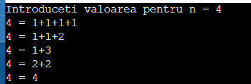
#include <iostream>
#include <fstream>
using namespace std;
//M3.11 - metoda reluarii
int n;
int s[101];
int f;
void afisare() {
cout<<n<<" = ";
for (int i=1; i<=f; i++) {
if (i>1) cout<<"+";
cout<<s[i];}
cout<<"\n";}
void back(int sr, int min) {
if (sr==0) {
afisare();
return;}
for (int v=min; v<=sr; v++) {
s[++f]=v;
back(sr-v, v);
f--;}}
int main() {
cout<<"Introduceti valoarea pentru n = ";
cin>>n;
cout<<"\n";
f=0;
back(n, 1);
return 0;}
Se dă un număr natural par n. Să se determine toate șirurile de n paranteze care se închid corect. Exemplu: pentru n=6: ((( ))), (() ()), () () (), () (()), (()) ()
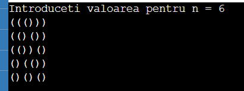
#include <iostream>
using namespace std;
//M3.24 - metoda reluarii
int n;
char s[101];
int f;
void afisare() {
for (int i=1; i<=f; i++)
cout<<s[i];
cout<<"\n";}
// d= nr de '(' ; in = nr de ')'
void back(int d, int in) {
if (d==n/2 && in==n/2) {
afisare();
return;}
if (d<n/2) {
s[++f]='(';
back(d+1,in);
f--;}
if (in<d) {
s[++f] = ')';
back(d, in+1);
f--;}}
int main() {
cout<<"Introduceti valoarea pentru n = ";
cin>>n;
f=0;
back(0, 0);
return 0;}
Generarea aranjamentelor. Să se genereze aranjamentele din n luate câte k a mulțimii A={1,2,... n}. An m = n(n − 1) ... (n − m + 1) = n! (n − m)! , n ≥ m
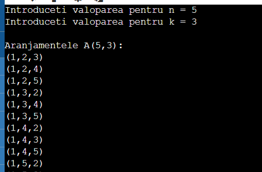
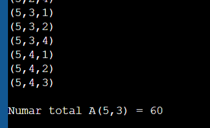
#include <iostream>
using namespace std;
//M4.6 - aranjamente si combinari
int n, k;
int s[21];
bool folosit[21];
int t;
void afisare() {
cout<<"(";
for (int i=1; i<=k; i++) {
if (i>1) cout<<",";
cout<<s[i];}
cout<<")\n";
t++;
}
void back(int nivel) {
if (nivel==k+1) {
afisare();
return;}
for (int v=1; v<=n; v++) {
if (!folosit[v]) {
s[nivel]=v;
folosit[v]=true;
back(nivel+1);
folosit[v]=false; // reluare
}}}
//functie pentru calcul
long long aranjamente(int n, int k) {
long long rez=1;
for (int i=n; i>=n-k+1; i--)
rez*=i;
return rez;}
int main() {
cout<<"Introduceti valoparea pentru n = "; cin>>n;
cout<<"Introduceti valoparea pentru k = "; cin>>k;
if (k>n) {
cout<<"k nu poate fi mai mare decat n!\n";
return 1;}
cout<<"\nAranjamentele A("<<n<<","<<k<<"):\n";
back(1);
cout<<"\nNumar total A("<<n<<","<<k<<") = "<<aranjamente(n, k)<<"\n";
return 0;}
Se citește un vector cu n elemente numere naturale. Să se calculeze suma elementelor vectorului folosind divide et impera.
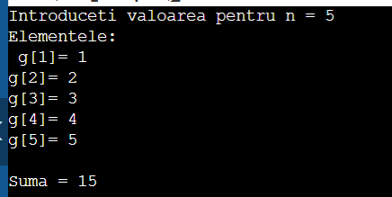
#include <iostream>
using namespace std;
//M5.15
int g[1001];
long suma(int st, int dr) {
if (st == dr)
return g[st];
int mij=(st+dr)/2;
long stanga = suma(st, mij);
long dreapta = suma(mij+1, dr);
return stanga + dreapta;
}
int main() {
int n;
cout<<"Introduceti valoarea pentru n = "; cin>>n;
cout<<"Elementele:\n ";
for (int i=1; i<=n; i++){
cout<<"g["<<i<<"]= "; cin>>g[i];}
cout<<"\nSuma = "<<suma(1, n)<<"\n";
return 0;}
Problema diligenței. Un comis-voiajor are de făcut o călătorie cu diligența între două orașe din vestul sălbatic. Călătoria cu diligența se desfășoară în n etape. În fiecare etapă diligența merge, fără întrerupere, între două orașe. După o etapă diligența este schimbată, iar comis-voiajorul decide în care oraș va merge în etapa următoare. Se știe că în fiecare etapă, cu excepția ultimei etape, se poate ajunge în unul din cele k orașe. Se cunoaște orașul de start, S și cel final, F (în ultima etapă se ajunge în orașul F). Pentru orice etapă se cunosc toate distanțele între orașele care sunt puncte de pornire și cele care sunt puncte de destinație. Se cere să se decidă care sunt orașele destinație pentru o anumită etapă, astfel încât lungimea totală a drumului, care trebuie afișată, să fie minimă.
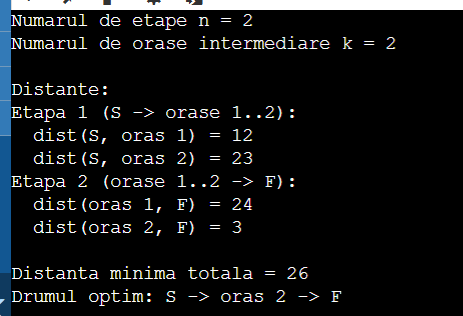
#include <iostream>
#include <climits>
using namespace std;
//M6.2 - programare dinamica
const int NMAX = 20;
const int KMAX = 20;
const int INF = INT_MAX / 2;
int dist[NMAX][KMAX+2][KMAX+2];
int dp[NMAX+1][KMAX+2];
int nxt[NMAX][KMAX+2];
int main() {
int n, k;
cout<<"Numarul de etape n = "; cin>>n;
cout<<"Numarul de orase intermediare k = "; cin>>k;
cout<<"\nDistante:\n";
if (n==1) {
cout<<"Distanta S -> F: ";
cin>>dist[0][0][k+1];}
else {
cout<<"Etapa 1 (S -> orase 1.." <<k<<"):\n";
for (int j=1; j<=k; j++) {
cout<<" dist(S, oras "<<j<<") = ";
cin>>dist[0][0][j];}
for (int e=1; e<=n-2; e++) {
cout<<"Etapa "<<e+1<<" (orase 1.."<<k<<" -> orase 1.."<<k<<"):\n";
for (int i=1; i<=k; i++)
for (int j=1; j<=k; j++) {
cout<<" dist(oras "<<i<<", oras "<<j<<") = ";
cin>>dist[e][i][j];}}
//ultima etapa
cout<<"Etapa "<<n<<" (orase 1.."<<k<<" -> F):\n";
for (int i=1; i<=k; i++) {
cout<<" dist(oras "<<i<<", F) = ";
cin>>dist[n-1][i][k+1];}}
//programare dinamica
for (int i=0; i<=k+1; i++) dp[n][i]=INF;
dp[n][k+1]=0;
if (n==1) {
dp[0][0] = dist[0][0][k+1];
nxt[0][0] = k+1;}
else {
for (int i=1; i<=k; i++) {
dp[n-1][i] = dist[n-1][i][k+1] + dp[n][k+1];
nxt[n-1][i] = k+1;}
for (int e=n-2; e>=1; e--) {
for (int i=1; i<=k; i++) {
dp[e][i] = INF;
for (int j=1; j<=k; j++) {
int cost = dist[e][i][j] + dp[e+1][j];
if (cost < dp[e][i]) {
dp[e][i] = cost;
nxt[e][i] = j;}}}}
dp[0][0] = INF;
for (int j=1; j<=k; j++) {
int cost = dist[0][0][j] + dp[1][j];
if (cost<dp[0][0]) {
dp[0][0] = cost;
nxt[0][0] = j;}}}
cout<<"\nDistanta minima totala = "<<dp[0][0]<<"\n";
cout<<"Drumul optim: S";
int c=0;
for (int e=0; e<n; e++) {
int urm=nxt[e][c];
if (urm==k+1)
cout<<" -> F";
else
cout<<" -> oras "<<urm;
c=urm;}
cout<<"\n";
return 0;}
Submatrice pătratică maximală. Dându-se o matrice binară cu m linii și n coloane, determinați o submatrice pătratică de dimensiune maximă care are toate elementele egale cu 1. De exemplu, fie matricea binară următoare: 0 1 1 0 1 1 1 0 1 0 0 1 1 1 0 1 1 1 1 0 1 1 1 1 1 Submatricea pătratică de dimensiune maximă care are toate elementele egale cu 1 este: 1 1 1 1 1 1 1 1 1
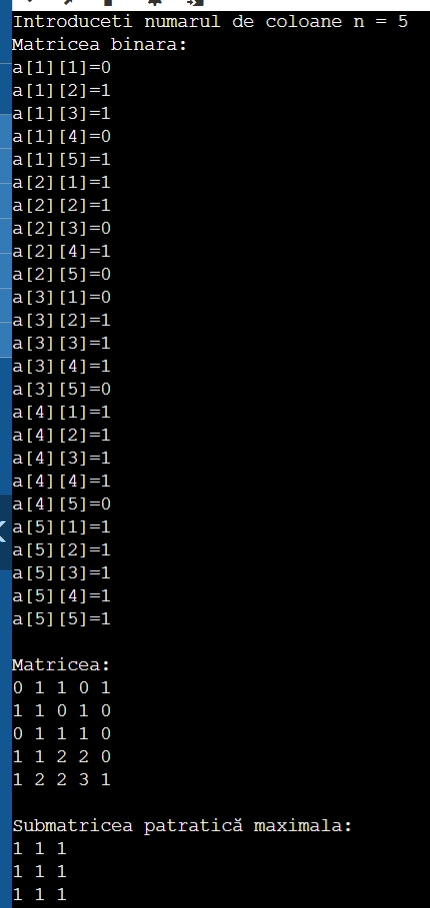
#include <iostream>
using namespace std;
//M6.23 - programare dinamica
int a[101][101];
int p[101][101];
int main() {
int m, n;
cout<<"Introduceti numarul de linii m = "; cin>>m;
cout<<"Introduceti numarul de coloane n = "; cin>>n;
cout<<"Matricea binara:\n";
for (int i=1; i<=m; i++)
for (int j=1; j<=n; j++){
cout<<"a["<<i<<"]["<<j<<"]="; cin>>a[i][j];}
int latMax = 0, iMax = 0, jMax = 0;
for (int i=1; i<=m; i++) {
for (int j=1; j<=n; j++) {
if (a[i][j] == 0) {
p[i][j] = 0;}
else {
int v1 = p[i-1][j];
int v2 = p[i][j-1];
int v3 = p[i-1][j-1];
int minV = v1 < v2 ? v1 : v2;
if (v3 < minV) minV = v3;
p[i][j] = minV + 1;}
if (p[i][j] > latMax) {
latMax = p[i][j];
iMax = i;
jMax = j;}}}
cout<<"\nMatricea:\n";
for (int i=1; i<=m; i++) {
for (int j=1; j<=n; j++)
cout<<p[i][j]<<" ";
cout<<"\n";}
cout<<"\nSubmatricea patratică maximala:\n";
for (int i=iMax-latMax+1; i<=iMax; i++) {
for (int j=jMax-latMax+1; j<=jMax; j++)
cout<<a[i][j]<<" ";
cout<<"\n";}
return 0;}
Evidenta cartilor dintr-o biblioteca Sa se dezvolte o aplicatie care preia informatii despre cartile unei biblioteci si tipareste tabele cu cartile care au o anumita caracteristica: 1. Sunt scrise de un autor cerut; 2. Sunt caracterizate prin o anumita descriere; 3. Sunt aparute in o perioada de timp data; 4. Se incadreaza in un anumit domeniu; 5. Sunt tiparite de o anumita editura. Aplicatia trebuie sa permita introducerea de noi carti, actualizarea cartilor.


using System;
using System.Collections.Generic;
using System.Linq;
using System.Text;
using System.Threading.Tasks;
namespace parctica_pr4
{ class Carte
{ public int ID { get; set; }
public string Titlu { get; set; }
public string Autor { get; set; }
public string Descriere { get; set; }
public int Aparitie { get; set; }
public string Domeniu { get; set; }
public string Editura { get; set; }
public Carte(int id, string titlu, string autor,
string descriere, int anAparitie,
string domeniu, string editura)
{ ID = id;
Titlu = titlu;
Autor = autor;
Descriere = descriere;
Aparitie = anAparitie;
Domeniu = domeniu;
Editura = editura;}
public void Afisare()
{ Console.WriteLine(
$"{ID,-6}{Titlu,-25}{Autor,-25}{Aparitie,-10}{Domeniu,-20}
{Editura,-20}");}}
class Biblioteca
{ private List carti;
public Biblioteca()
{ carti = new List();}
public void AdaugaCarte(Carte carte)
{ carti.Add(carte);
Console.WriteLine("Cartea a fost adaugata cu succes!");}
private void Antet()
{ Console.WriteLine();
Console.WriteLine($"{"ID|",-5}{"|Titlu",-25}{"|Autor",-25}
{"|An",-10}{"|Domeniu",-20}{"|Editura",-20}");}
public void AfiseazaToateCartile()
{ if (carti.Count == 0)
{ Console.WriteLine("Nu exista carti in biblioteca.");
return;}
Antet();
foreach (Carte carte in carti)
{ carte.Afisare();}}
public void CautaAutor(string autor)
{ bool gasit = false;
Antet();
foreach (Carte carte in carti)
{ if (carte.Autor.ToLower().Contains(autor.ToLower()))
{ carte.Afisare();
gasit = true;}}
if (!gasit)
Console.WriteLine("Nu exista carti pentru acest autor.");}
public void CautaDescriere(string descriere)
{ bool gasit = false;
Antet();
foreach (Carte carte in carti)
{ if (carte.Descriere.ToLower().Contains(descriere.ToLower()))
{ carte.Afisare();
gasit = true;}}
if (!gasit)
Console.WriteLine("Nu exista carti cu aceasta descriere.");}
public void CautaPerioada(int anStart, int anFinal)
{ bool gasit = false;
Antet();
foreach (Carte carte in carti)
{ if (carte.Aparitie >= anStart &&
carte.Aparitie <= anFinal)
{ carte.Afisare();
gasit = true;}}
if (!gasit)
Console.WriteLine("Nu exista carti aparute in perioada indicata.");}
public void CautaDomeniu(string domeniu)
{ bool gasit = false;
Antet();
foreach (Carte carte in carti)
{ if (carte.Domeniu.ToLower().Contains(domeniu.ToLower()))
{ carte.Afisare();
gasit = true;}}
if (!gasit)
Console.WriteLine("Nu exista carti din domeniul respectiv.");}
public void CautaEditura(string editura)
{ bool gasit = false;
Antet();
foreach (Carte carte in carti)
{ if (carte.Editura.ToLower().Contains(editura.ToLower()))
{ carte.Afisare();
gasit = true;}}
if (!gasit)
Console.WriteLine("Nu exista carti tiparite de aceasta editura.");}
public void ActualizeazaCarte(int id)
{ foreach (Carte carte in carti)
{ if (carte.ID == id)
{ Console.WriteLine("Introduceti noile date:");
Console.Write("Titlu: ");
carte.Titlu = Console.ReadLine();
Console.Write("Autor: ");
carte.Autor = Console.ReadLine();
Console.Write("Descriere: ");
carte.Descriere = Console.ReadLine();
Console.Write("An aparitie: ");
carte.Aparitie = int.Parse(Console.ReadLine());
Console.Write("Domeniu: ");
carte.Domeniu = Console.ReadLine();
Console.Write("Editura: ");
carte.Editura = Console.ReadLine();
Console.WriteLine("Cartea a fost actualizata cu succes!");
return;}}
Console.WriteLine("Cartea cu ID-ul introdus nu exista.");}}
class Program
{ static void Main(string[] args)
{ Biblioteca biblioteca = new Biblioteca();
int optiune;
do
{ Console.WriteLine("\nMeniu biblioteca");
Console.WriteLine("1. Afisare toate cartile");
Console.WriteLine("2. Adaugare carte");
Console.WriteLine("3. Cautare dupa autor");
Console.WriteLine("4. Cautare dupa descriere");
Console.WriteLine("5. Cautare dupa perioada");
Console.WriteLine("6. Cautare dupa domeniu");
Console.WriteLine("7. Cautare dupa editura");
Console.WriteLine("8. Actualizare carte");
Console.WriteLine("0. Iesire");
Console.Write("Alegeti optiunea: ");
optiune = int.Parse(Console.ReadLine());
switch (optiune)
{ case 1:
biblioteca.AfiseazaToateCartile();
break;
case 2:
Console.Write("ID: ");
int id = int.Parse(Console.ReadLine());
Console.Write("Titlu: ");
string titlu = Console.ReadLine();
Console.Write("Autor: ");
string autor = Console.ReadLine();
Console.Write("Descriere: ");
string descriere = Console.ReadLine();
Console.Write("An aparitie: ");
int an = int.Parse(Console.ReadLine());
Console.Write("Domeniu: ");
string domeniu = Console.ReadLine();
Console.Write("Editura: ");
string editura = Console.ReadLine();
biblioteca.AdaugaCarte(
new Carte(id, titlu, autor, descriere,
an, domeniu, editura));
break;
case 3:
Console.Write("Autor cautat: ");
biblioteca.CautaAutor(Console.ReadLine());
break;
case 4:
Console.Write("Descriere cautata: ");
biblioteca.CautaDescriere(Console.ReadLine());
break;
case 5:
Console.Write("An inceput: ");
int start = int.Parse(Console.ReadLine());
Console.Write("An sfarsit: ");
int sfarsit = int.Parse(Console.ReadLine());
biblioteca.CautaPerioada(start, sfarsit);
break;
case 6:
Console.Write("Domeniu cautat: ");
biblioteca.CautaDomeniu(Console.ReadLine());
break;
case 7:
Console.Write("Editura cautata: ");
biblioteca.CautaEditura(Console.ReadLine());
break;
case 8:
Console.Write("Introduceti ID-ul cartii: ");
int idCarte = int.Parse(Console.ReadLine());
biblioteca.ActualizeazaCarte(idCarte);
break;
case 0:break;}}
while (optiune != 0);}}}
Gestiunea grila programe televiziune Se considera o firma de televiziune prin cablu care ofera un numar N de posturi. Fiecare canal de televiziune are o anumita frecventa pe care este receptionat, anumite zile ale saptamanii alocate unei eventuale revizii, un program pentru fiecare zi a saptamanii, fiecare emisiune din cadrul programului fiind caracterizata prin : 1. genul emisiunii (de exemplu divertisment, cultural etc.) ; 2. publicul ținta (tinerii sub 18 ani de exemplu) ; 3. ora difuzarii ; 4. durata ; 5. tipul emisiunii (live sau lnregistrata). Sa se realizeze o aplicatie care studiaza programul fiecarui canal in parte si determina in cadrul unei saptamanii de emisie: 1. tipul acestuia (de exemplu cultural daca majoritatea emisiunilor au un astfel de caracter) ; 2. durata medie a emisiunilor ; 3. numarul de emisiuni live, respectiv numarul de emisiuni inregistrate ; 4. publicul tinta al respectivului post de televiziune ; 5. determinarea orei preponderente pentru un anumit gen de emisiune. Pe baza acestui studiu realizat la nivelul fiecarui post de televiziune, aplicatia va genera o situatie globala privind tipul celor N canale difuzate de respective firma de cablu, acoperirea publicului privit prin perspectiva publicului declarat ca tinta.

using System;
using System.Collections.Generic;
using System.Linq;
using System.Text;
using System.Threading.Tasks;
namespace parctica_pr9
{ class Emisiune
{ public string Titlu { get; set; }
public string Gen { get; set; }
public string PublicTinta { get; set; }
public TimeSpan OraDifuzare { get; set; }
public int Durata { get; set; }
public bool EsteLive { get; set; }
public Emisiune(string titlu, string gen, string publicTinta,
TimeSpan oraDifuzare, int durata, bool esteLive)
{ Titlu = titlu;
Gen = gen;
PublicTinta = publicTinta;
OraDifuzare = oraDifuzare;
Durata = durata;
EsteLive = esteLive;}}
class CanalTV
{ public string Nume { get; set; }
public double Frecventa { get; set; }
public string ZiRevizie { get; set; }
public List Emisiuni { get; set; }
public CanalTV(string nume, double frecventa, string ziRevizie)
{ Nume = nume;
Frecventa = frecventa;
ZiRevizie = ziRevizie;
Emisiuni = new List();}
public void AdaugaEmisiune(Emisiune emisiune)
{ Emisiuni.Add(emisiune);}
public string DeterminaTipCanal()
{ if (Emisiuni.Count == 0)
return "Necunoscut";
return Emisiuni
.GroupBy(e => e.Gen)
.OrderByDescending(g => g.Count())
.First()
.Key;}
public double DurataMedie()
{ if (Emisiuni.Count == 0)
return 0;
return Emisiuni.Average(e => e.Durata);}
public int NumarLive()
{ return Emisiuni.Count(e => e.EsteLive);}
public int NumarInregistrate()
{ return Emisiuni.Count(e => !e.EsteLive);}
public string PublicPredominant()
{ if (Emisiuni.Count == 0)
return "Necunoscut";
return Emisiuni
.GroupBy(e => e.PublicTinta)
.OrderByDescending(g => g.Count())
.First()
.Key;}
public string OraPredominantaGen(string gen)
{ var lista = Emisiuni
.Where(e => e.Gen.ToLower() == gen.ToLower());
if (!lista.Any())
return "Nu exista emisiuni de acest gen";
int ora = lista
.GroupBy(e => e.OraDifuzare.Hours)
.OrderByDescending(g => g.Count())
.First()
.Key;
return ora + ":00";}
public void AfisareStatistici()
{ Console.WriteLine();
Console.WriteLine("Canal: " + Nume);
Console.WriteLine("Frecventa: " + Frecventa);
Console.WriteLine("Zi revizie: " + ZiRevizie);
Console.WriteLine("Tip canal: " + DeterminaTipCanal());
Console.WriteLine("Durata medie: " + DurataMedie());
Console.WriteLine("Nr. emisiuni live: " + NumarLive());
Console.WriteLine("Nr. emisiuni inregistrate: " + NumarInregistrate());
Console.WriteLine("Public predominant: " + PublicPredominant());}}
class FirmaCablu
{ public List Canale { get; set; }
public FirmaCablu()
{ Canale = new List();}
public void AdaugaCanal(CanalTV canal)
{ Canale.Add(canal);}
public void SituatieGlobala()
{ Console.WriteLine("\nSituatia globala");
Console.WriteLine("\nTipurile canalelor:");
var tipuri = Canale
.GroupBy(c => c.DeterminaTipCanal());
foreach (var tip in tipuri)
{ Console.WriteLine(tip.Key + " -> " + tip.Count() + " canal(e)");}
Console.WriteLine("\nAcoperirea publicului:");
var publicuri = Canale
.GroupBy(c => c.PublicPredominant());
foreach (var p in publicuri)
{ Console.WriteLine(p.Key + " -> " + p.Count() + " canal(e)");}}}
class Program
{ static void Main(string[] args)
{ FirmaCablu firma = new FirmaCablu();
CanalTV canal1 = new CanalTV("TV Cultural", 120.5, "Luni");
canal1.AdaugaEmisiune(
new Emisiune(
"Istoria Romaniei",
"Cultural",
"Adulti",
new TimeSpan(18, 0, 0),
60,
false));
canal1.AdaugaEmisiune(
new Emisiune(
"Muzee Celebre",
"Cultural",
"Adulti",
new TimeSpan(20, 0, 0),
45,
true));
canal1.AdaugaEmisiune(
new Emisiune(
"Teatru TV",
"Cultural",
"Adulti",
new TimeSpan(19, 0, 0),
90,
false));
CanalTV canal2 = new CanalTV("TV Sport", 135.8, "Marti");
canal2.AdaugaEmisiune(
new Emisiune(
"Meci Fotbal",
"Sport",
"Tineri",
new TimeSpan(18, 0, 0),
120,
true));
canal2.AdaugaEmisiune(
new Emisiune(
"Baschet Live",
"Sport",
"Tineri",
new TimeSpan(20, 0, 0),
90,
true));
canal2.AdaugaEmisiune(
new Emisiune(
"Rezumate Sportive",
"Sport",
"Tineri",
new TimeSpan(22, 0, 0),
60,
false));
CanalTV canal3 = new CanalTV("TV Divertisment", 150.3, "Miercuri");
canal3.AdaugaEmisiune(
new Emisiune(
"Talent Show",
"Divertisment",
"Toata familia",
new TimeSpan(19, 0, 0),
120,
true));
canal3.AdaugaEmisiune(
new Emisiune(
"Comedie",
"Divertisment",
"Toata familia",
new TimeSpan(21, 0, 0),
60,
false));
firma.AdaugaCanal(canal1);
firma.AdaugaCanal(canal2);
firma.AdaugaCanal(canal3);
canal1.AfisareStatistici();
Console.WriteLine("Ora predominanta pentru genul Cultural: "
+ canal1.OraPredominantaGen("Cultural"));
canal2.AfisareStatistici();
Console.WriteLine("Ora predominanta pentru genul Sport: "
+ canal2.OraPredominantaGen("Sport"));
canal3.AfisareStatistici();
Console.WriteLine("Ora predominanta pentru genul Divertisment: "
+ canal3.OraPredominantaGen("Divertisment"));
firma.SituatieGlobala();
Console.ReadKey();}}}
Fiind dat un număr natural pozitiv n, se cere să se producă la ieșire toate descompunerile sale ca sumă de numere prime.
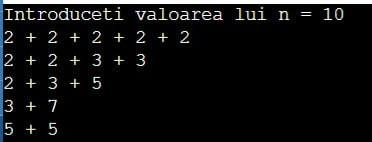
#include <iostream>
using namespace std;
//M3.18 - tehnica reluarii
int n, x[100];
bool prim(int nr)
{ if (nr<2)
return false;
for (int d=2; d*d<=nr; d++)
if (nr%d==0)
return false;
return true;}
void afisare(int k)
{ for (int i=1; i<=k; i++)
{ cout<<x[i];
if (i<<k)
cout<<" + ";}
cout<<endl;}
void back(int k, int s, int start)
{ if (s==n)
{ afisare(k-1);
return;}
for (int i=start; i<=n-s; i++)
{ if (prim(i))
{ x[k]=i;
back(k+1, s+i, i);}}}
int main()
{ cout<<"Introduceti valoarea lui n = "; cin>>n;
back(1, 0, 2);
return 0;}